Portfólio
O meu nome é Siobhan O'Shea e este é o meu portfólio.
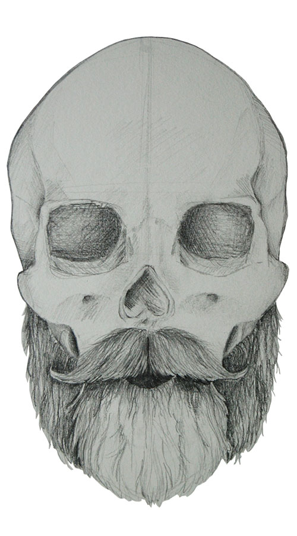
Retratos
Série de retratos, em progresso. Realizados a grafite em diferentes formatos e tipo de papel.
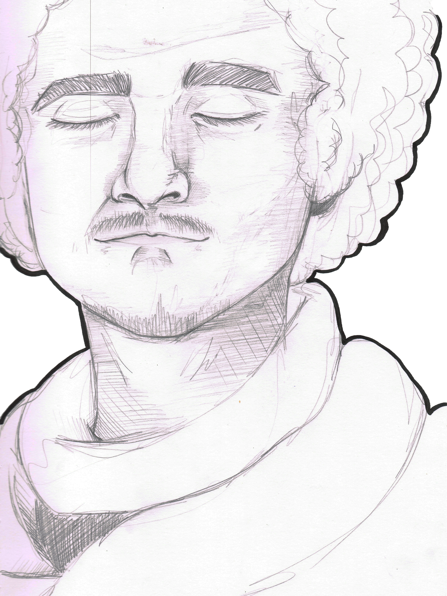
Caveiras
Série de caveiras, em progresso. Realizados a grafite em diferentes formatos e tipo de papel.


Desenhos de Observação
Desenhos de observação, realizados no diário gráfico e em tipos de materiais e papeis diferentes. Formato A4.
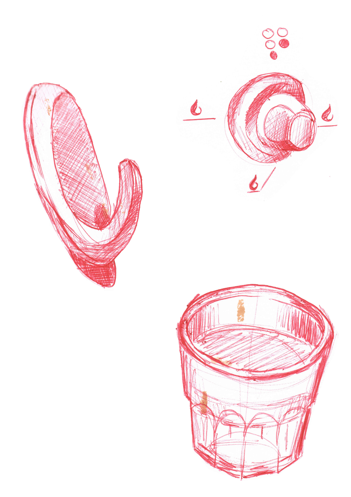
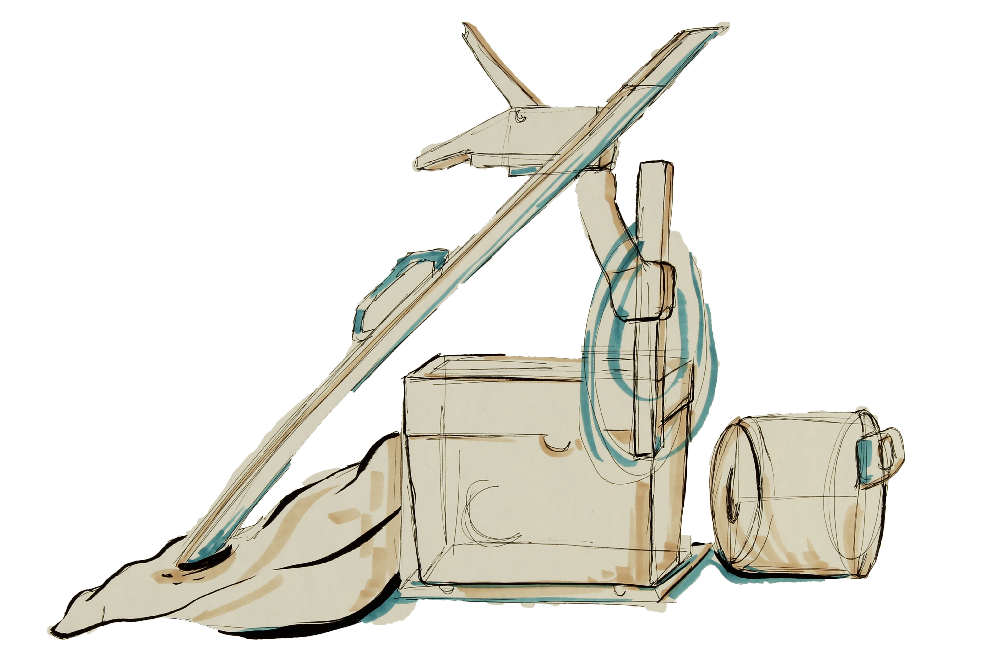
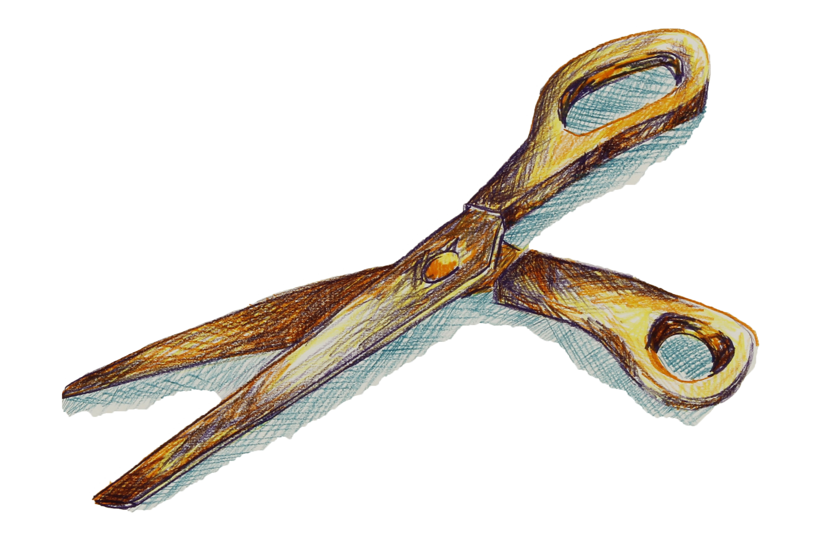
Diário Gráfico
Desenhos no diário gráfico, parte de uma série em progresso de condições psicológicas e corpo humano feminino. Formatos A4.
 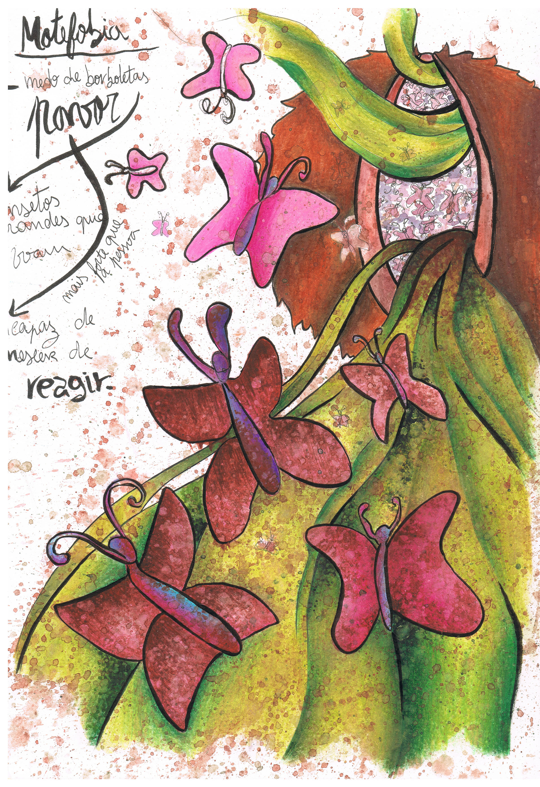
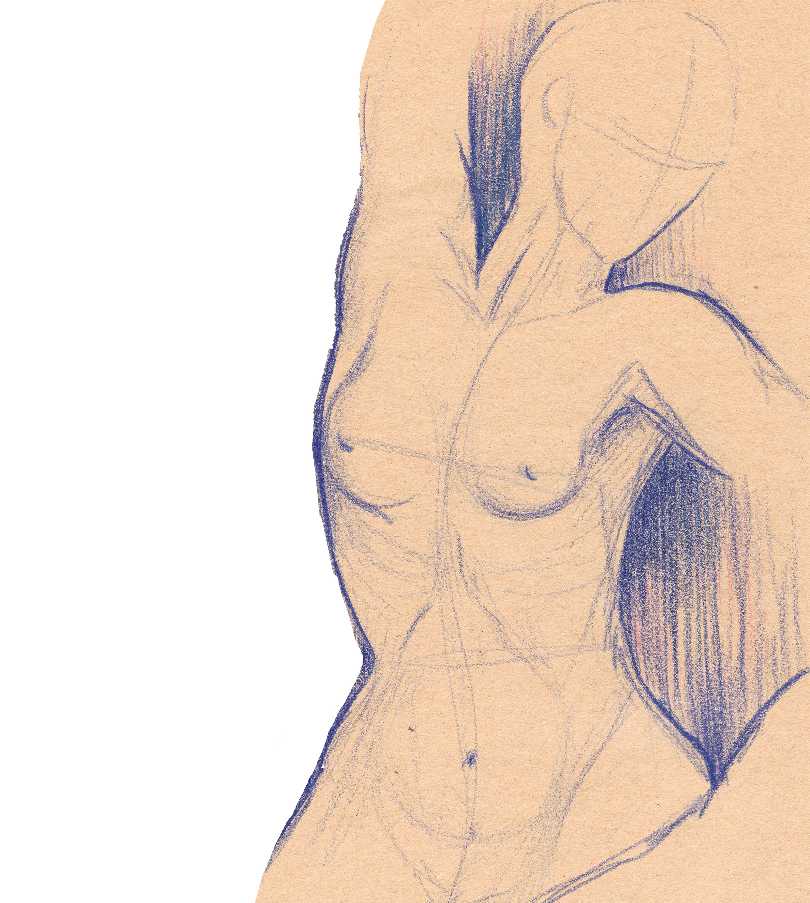
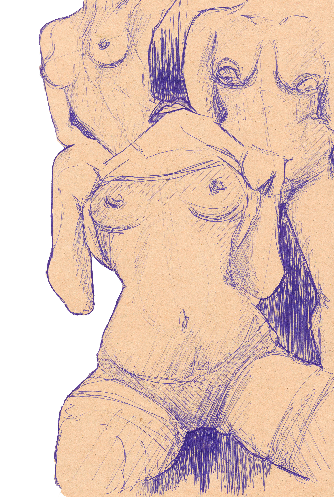
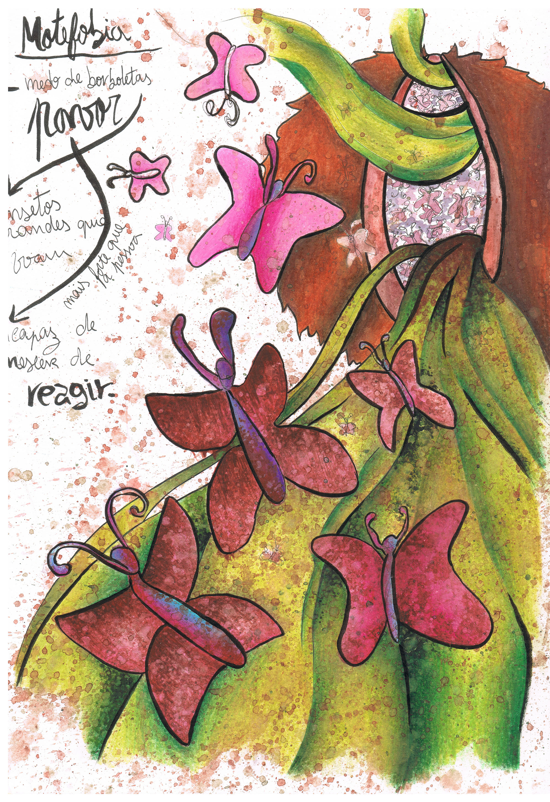
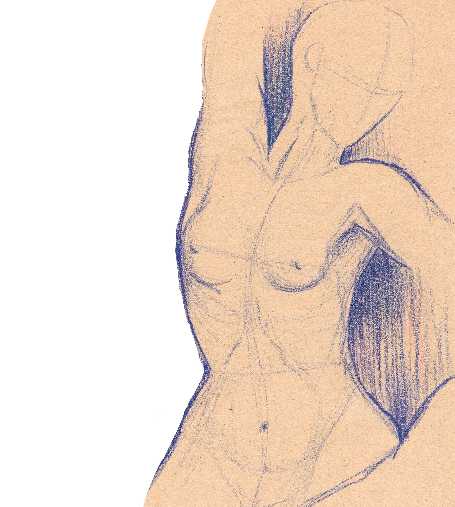
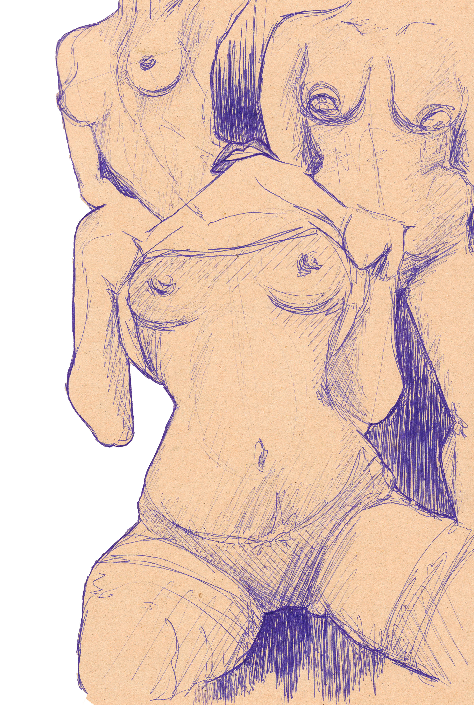
Concept Art
Criaturas Fantásticas, realizadas a aguarela e lápis de cor, sobre diferentes tipos de papel. Formato A4.
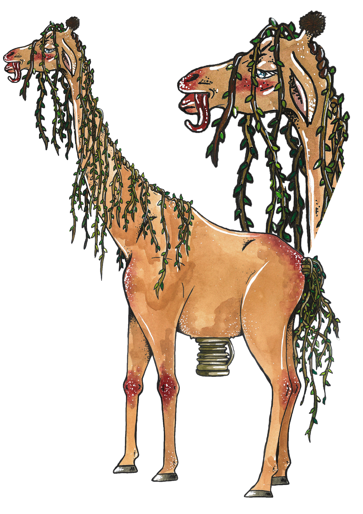 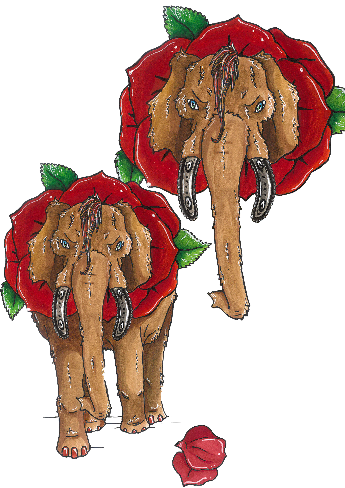 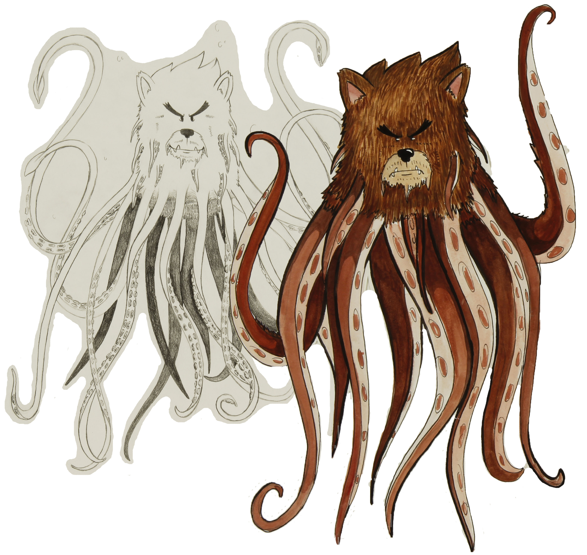
Cenário do Bicho Pantanoso.


Cenário do Bicho Peludo.

Contactos
© Shi O'Shea. All rights reserved. Design: HTML5 UP.